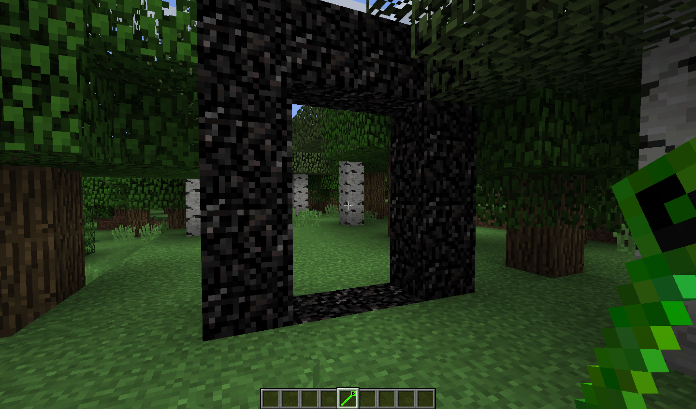

The portal to the dungeon world is built from the corresponding block. It, in turn, is crafted from triple compressed obsidian, it is also crafted from double compressed obsidian, which is crafted from compressed obsidian, which is made from ordinary obsidian. You can view all the crafting recipes in Jei
Build a frame like for the portal to Nezer and activate it with the help of the Dungeon Charm.
It is recommended to enter the portal at least in diamond armor and with a good sword. The fact is that monsters are there at every turn, not only at night, but also during the day. If you find a dungeon , you can safely go there and take the resources that are in the chests. Be careful: there may be hiding places in the dungeons
Build a frame like for the portal to Nezer and activate it with the help of the Dungeon Charm.
It is recommended to enter the portal at least in diamond armor and with a good sword. The fact is that monsters are there at every turn, not only at night, but also during the day. If you find a dungeon , you can safely go there and take the resources that are in the chests. Be careful: there may be hiding places in the dungeons
